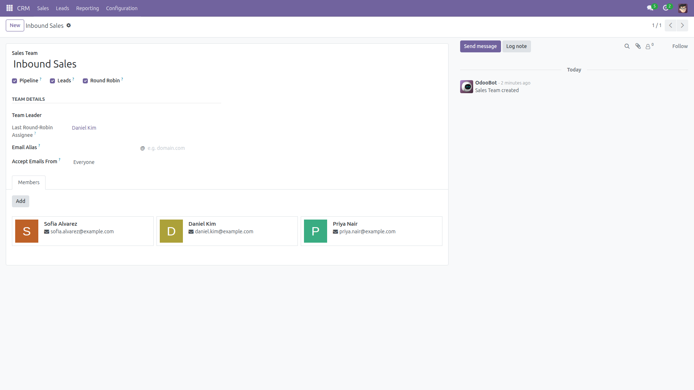
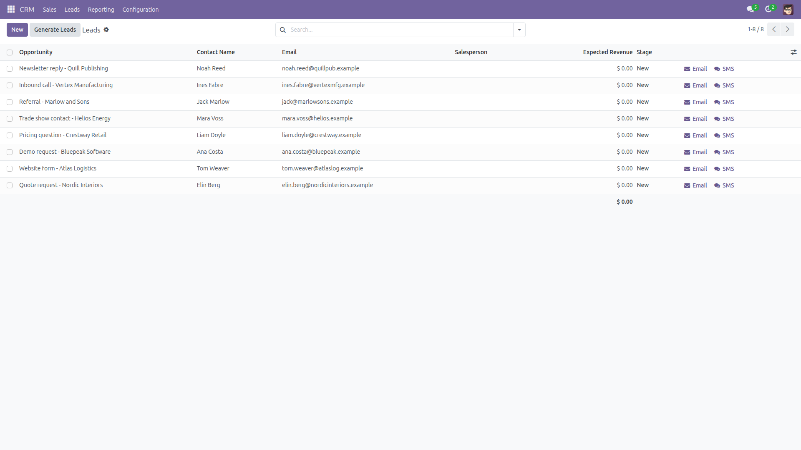
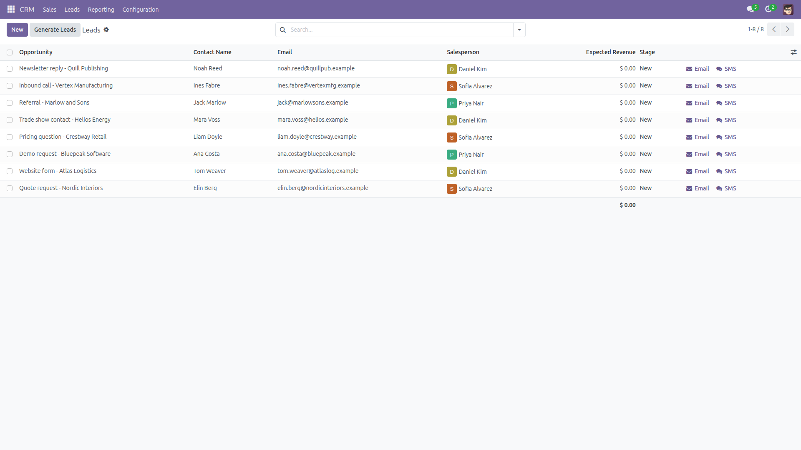

Round-Robin Lead Assignment
Fair automatic CRM lead distribution — free, for every sales team.
Automatic lead distribution is an Enterprise-only feature in standard Odoo.
This module adds a simple, fair alternative: tick a Round Robin checkbox
on any sales team and every new lead or opportunity created on that team
without a salesperson is assigned to the team members in strict rotation
— first member, second member, third member, then back to the first.
- Per-team toggle — enable rotation only on the teams that want it.
- Strict, predictable rotation — members take turns in a fixed order; 6 leads over 3 members means exactly 2 each.
- Assigns on creation — for every lead created with a sales team (email gateway to a team alias, imports and API calls that set the team, website forms); leads whose team is only computed afterwards are picked up by the catch-up cron instead.
- Multi-company safe — rotation only picks members allowed in the lead's company.
- Hourly catch-up cron — sweeps leads that ended up unassigned anyway (capped at 500 per run, a failure on one team never blocks the others).
- Respects manual choices — a lead created with a salesperson is never touched, and nothing is ever reassigned.
- Skips archived users — deactivated members simply drop out of the rotation.
- No new models, no extra permissions, depends on
crm only.
Screenshots

One checkbox on the sales team form — the last round-robin assignee is shown next to the team leader.

Before: leads arrived with no salesperson.

After: the same leads, distributed over the team members in strict rotation.
Installation
- Download the module and place it in your addons path.
- Update the app list (Apps > Update Apps List, developer mode).
- Install Round-Robin Lead Assignment.
Configuration
- Open CRM > Configuration > Sales Teams and pick a team.
- Make sure the team has members.
- Tick Round Robin. That is all — the hourly catch-up cron
(Round-robin: assign unassigned leads) is installed and activated automatically.
Usage
- Create leads or opportunities on the team without picking a salesperson
(email gateway, import, website form, API...).
- Each new lead is assigned to the next member in the rotation at creation time.
- Leads that still end up unassigned are picked up by the hourly cron.
- The team form shows the Last Round-Robin Assignee so you always know whose turn is next.
Limitations (honest ones)
- This is a simple fair rotation — not the weighted, capacity-based,
domain-filtered assignment of Odoo Enterprise or the probabilistic
Rule-Based Assignment built into newer Community versions. It is meant to be
predictable and zero-config instead.
- It never reassigns a lead that already has a salesperson — manual choices always win.
- Rotation order is fixed (member creation order); it is not configurable.
- Leads created in the backend form are usually pre-filled with the current user as
salesperson by Odoo itself — the rotation applies to leads that arrive without one.
- If you also enable Odoo's own opt-in Rule-Based Assignment (Community 15.0+) on a team,
the catch-up cron leaves that team to Odoo to avoid competing assignments;
creation-time rotation still applies.
- If the member the pointer references leaves the team, the rotation restarts at the
first member.
- On Odoo 19, email-gateway leads on a round-robin team with no members are
assigned to the team leader by Odoo itself, not left unassigned.